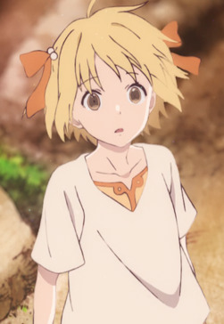

|
Asuna Watase |
- Children Who Chase Lost Voices
|
Asuna Watase is a girl around 15 years old, who has been forced to grow up quickly due to the loss of her father. She spends her time at her clubhouse where she listens to strange music from a crystal radio given to her by her father. |
 |
Connie Lee |
|
Connie Lee is an American astronaut aboard International Space Station. She itnessed the petrification of all human life on Earth from ISS. She is big fan of Lillian Weinberg. |
 |
Erina Nakiri |
- Food Wars! The Second Plate
- Food Wars! The Second Plate OVA
- Food Wars! The Third Plate: Totsuki Train Arc
- Food Wars! The Third Plate OVA
- Food Wars! The Fourth Plate
- Food Wars! The Fifth Plate
|
Erina Nakiri is a 92nd Generation Tootsuki Culinary Academy student. She is well known base on her ability taste food and judgement on the food. She is a typical rich girl but lacks normal teenage girl behavior. She lack any common sense since everything has not been done by her for years. Her assitant and friend is Hisako Arato. |
 |
Mary Lil Fargo |
- Lord El-Melloi II Case Files: Rail Zeppelin Grace Note
|
Mary Lil Fargo is magus of the Fargo family and former student of Lord El-Melloi. She is old friends with Trisha Fellows. |
|  |
Sami |
- Children of the Whales
- Children of the Whales Specials
|
Sami is Suou's younger sister and Chakuro's childhood friend. Unlike her brother, she is one of the Marked who can wield thymia. She is a friendly, naive and innocent girl who was always worried about Chakuro. |
 |
Veronica Liones |
- The Seven Deadly Sins
- The Seven Deadly Sins: Signs of Holy War
- The Seven Deadly Sins: Revival of The Commandments
|
Veronica Liones is the second princess of Britannia. She is very tomboyish appearance and personality. She likes play with swords with boys when she was young. She cares about her sister, Elizabeth. |